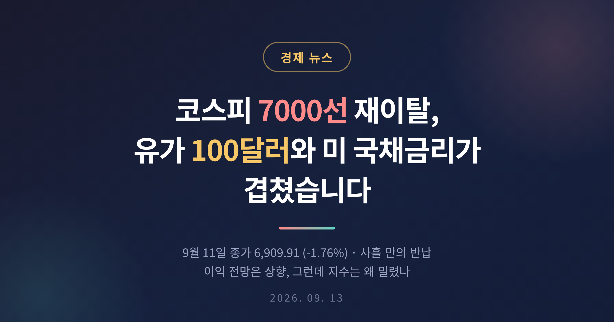
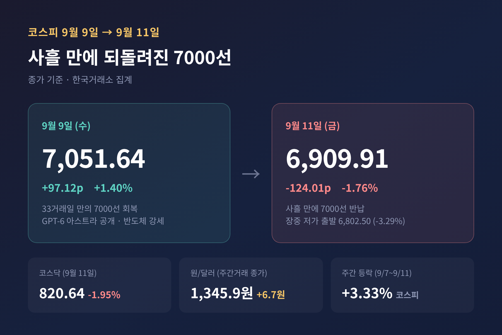
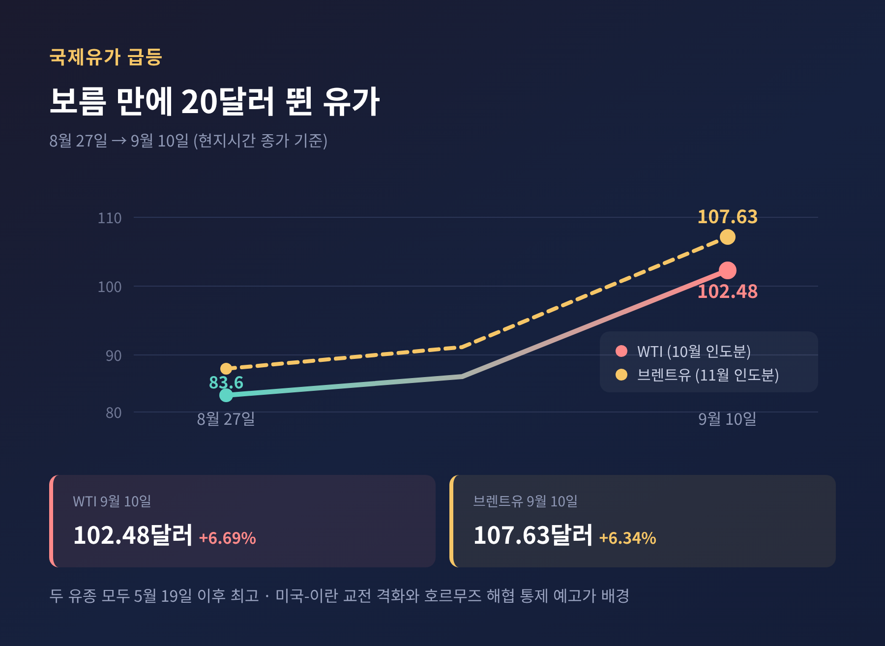
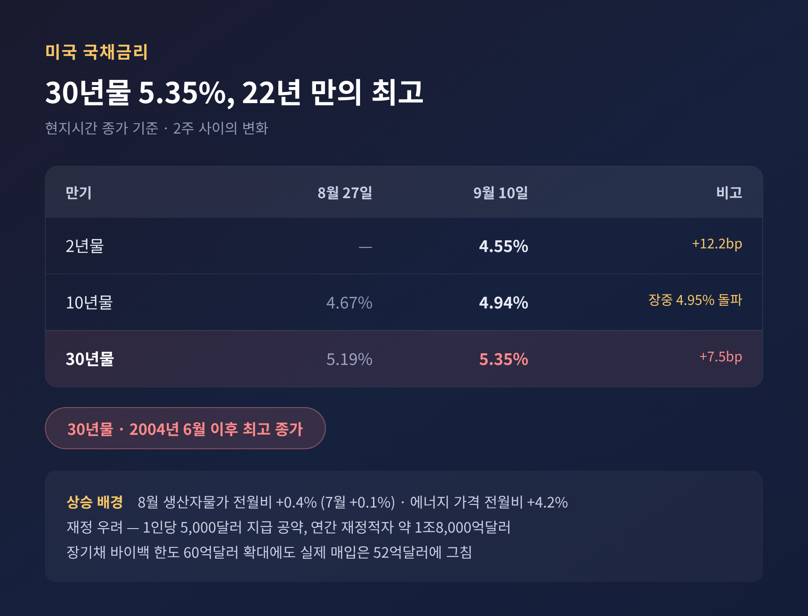
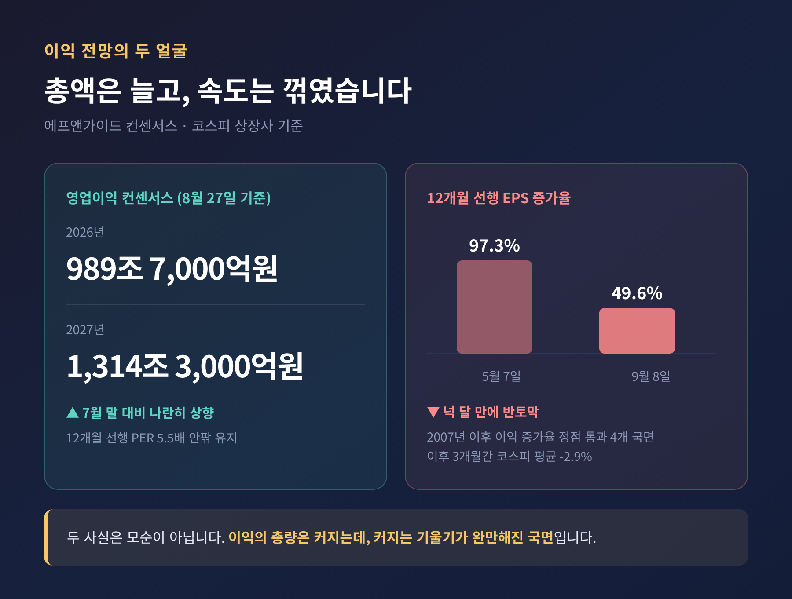
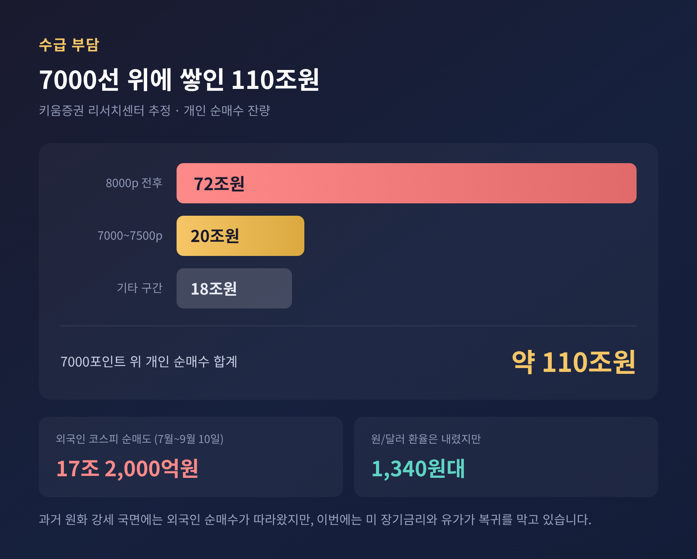
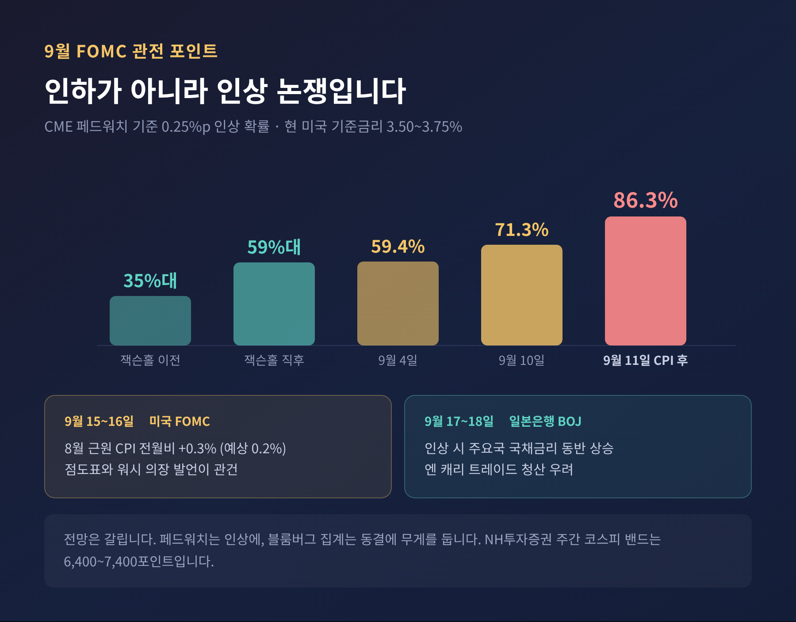

이번 글에서는 2026년 9월 11일 코스피가 사흘 만에 7000선을 내준 배경을 정리해 보겠습니다.
결론부터 세 줄로 말씀드립니다. 첫째, 지수를 끌어내린 것은 국내 요인이 아니라 국제유가와 미국 장기금리였습니다. 둘째, 기업 이익 전망은 오히려 상향됐지만 7000선 위에 쌓인 매물이 상승을 막고 있습니다. 셋째, 이번 주 방향은 9월 15~16일 미국 FOMC가 가릅니다.

9월 9일 코스피는 7,051.64로 마감했습니다. 전 거래일보다 97.12포인트, 1.40% 오른 값입니다. 종가 기준 7000선 회복은 33거래일 만이었습니다. 오픈AI가 차세대 모델 'GPT-6 아스트라'를 공개한 뒤 반도체주가 달아오른 덕이 컸습니다.
그런데 이틀 뒤 그림이 뒤집혔습니다.
9월 11일 코스피는 124.01포인트(1.76%) 내린 6,909.91에 거래를 마쳤습니다. 사흘 만의 7000선 반납입니다. 코스닥도 16.28포인트(1.95%) 빠진 820.64에 머물렀습니다. 장 출발은 더 험했습니다. 전장 대비 3.29% 급락한 6,802.50으로 문을 열었다가 오후 들어 낙폭을 겨우 줄였습니다.
흥미로운 대목이 하나 있습니다. 주간으로 보면 9월 7~11일 코스피는 3.33% 올랐습니다. 한 주 내내 오르다가 마지막 하루에 고비를 넘지 못한 셈입니다.
업종별로도 온도 차가 뚜렷했습니다. 전기·전자와 제조, 의료·정밀기기가 2% 넘게 밀렸고 삼성전자는 3.53%, SK하이닉스는 2.21% 떨어졌습니다. 반면 건설과 보험, 전기·가스는 1%대 올랐습니다. HD현대중공업은 울산 공장 신설 소식에 5.62% 뛰었습니다.

9월 10일 뉴욕상업거래소에서 10월 인도분 서부텍사스산원유(WTI)는 배럴당 102.48달러로 마감했습니다. 하루 만에 6.43달러, 6.69% 오른 값입니다. ICE선물거래소의 11월 인도분 브렌트유도 6.34% 뛴 107.63달러를 기록했습니다. 두 유종 모두 5월 19일 이후 가장 높은 수준입니다.
불과 2주 전만 해도 WTI는 83.6달러선이었습니다. 보름 만에 20달러 가까이 뛴 것입니다.
원인은 중동입니다. 미국 중부사령부가 이란 혁명수비대의 미 함정 공격에 대응해 이란 유조선 5척을 파괴했고, 이란은 요르단 내 미군 기지를 탄도미사일로 되받았습니다. 이란 혁명수비대는 호르무즈 해협 일대의 해상 통제구역을 넓히겠다고 예고했습니다. 예멘 후티 반군과 사우디아라비아의 교전도 겹쳤습니다.
유가는 단순한 원자재 가격이 아닙니다. 물가로 흘러들고, 물가는 금리로 옮겨 갑니다. 이번에도 경로는 그대로였습니다.

9월 10일 미국 30년물 국채금리는 7.5bp 오른 5.35%로 마감했습니다. 종가 기준 2004년 6월 이후 최고치입니다. 10년물은 4.94%까지 올라 장중 4.95%를 넘어섰고, 이는 2023년 10월 이후 가장 높은 수준입니다. 통화정책에 민감한 2년물도 12.2bp 뛴 4.55%를 기록했습니다.
배경에는 물가 지표가 있습니다. 미국의 8월 생산자물가지수는 전월 대비 0.4%, 전년 대비 5.4% 올랐습니다. 7월의 0.1%에서 크게 확대된 수치입니다. 에너지 가격만 전월 대비 4.2% 뛰었습니다.
재정 쪽 부담도 더해졌습니다. 트럼프 대통령은 공화당 전당대회에서 중간선거 승리 시 성인 1인당 5,000달러를 지급하겠다고 공약했습니다. AP통신은 연간 재정적자가 약 1조8,000억달러인 상황에서 이 공약이 적자와 물가를 함께 자극할 수 있다고 지적했습니다.
미 재무부가 장기채 바이백 규모를 종전의 세 배인 60억달러까지 늘렸지만, 실제 매입은 52억달러에 그쳤습니다. 시장을 진정시키기에는 모자랐습니다.
이경민 대신증권 FICC리서치부장은 미국채 금리 급등이 성장주에 특히 부담이 됐다고 설명했습니다. 반도체 대형주가 유독 크게 밀린 이유이기도 합니다.

여기서부터가 이번 조정의 진짜 쟁점입니다.
8월 27일 기준 코스피 상장사의 영업이익 컨센서스는 2026년 989조7,000억원, 2027년 1,314조3,000억원입니다. 둘 다 7월 말보다 올라간 숫자입니다. 키움증권도 2026년 컨센서스가 한 달 사이 970조원대에서 989조원으로 약 2% 상향됐다고 짚었습니다. 12개월 선행 주가수익비율은 5.5배 안팎에 머물러 밸류에이션 부담도 크지 않습니다.
그렇다면 지수는 왜 버티지 못했을까요.
두 가지가 걸립니다.
하나는 이익의 '속도'입니다. 에프앤가이드 집계로 유가증권시장 상장사의 12개월 선행 주당순이익 증가율은 9월 8일 49.6%였습니다. 5월 7일 97.3%에서 반토막이 난 것입니다. 이재만 하나증권 연구원은 이익 증가율이 꺾이는 국면에서는 지수 상승세도 둔화하는 경향이 있다고 분석했습니다. 하나증권이 2007년 이후 순이익 증가율이 정점을 찍고 내려온 네 국면을 살핀 결과, 이후 3개월간 코스피는 평균 2.9% 하락했습니다.
이익 총액은 늘고 있습니다. 다만 늘어나는 기울기가 완만해졌습니다. 두 문장 모두 사실입니다.

다른 하나는 수급입니다.
키움증권 리서치센터 추산에 따르면 코스피 7000포인트 위 구간에서 개인이 사들인 금액은 약 110조원에 이릅니다. 1차 매물대인 7000~7500포인트 구간에 20조원, 2차 매물대인 8000포인트 전후에 72조원이 몰려 있습니다. 지수가 7000선에 닿을 때마다 본전을 기다리던 물량이 쏟아지는 구조입니다.
강진혁 신한투자증권 연구원도 급락장에서 팔지 못했던 투자자들이 반등을 계기로 매도에 나서면서 7000선 부근의 추가 상승이 제한되고 있다고 봤습니다.
외국인의 빈자리도 큽니다. 유안타증권 집계로 7월 이후 9월 10일까지 외국인은 코스피에서 17조2,000억원을 순매도했습니다. 올해 누적으로는 삼성전자 79.1조원, SK하이닉스 69.8조원어치를 내다 팔았고, 그 물량을 개인이 각각 52.6조원, 51.1조원씩 받아냈습니다.
예전에는 원화가 강해지면 외국인이 함께 들어왔습니다. 지금은 환율이 1,340원대까지 내려왔는데도 발길이 더딥니다. 이재원 유안타증권 연구원은 외국인이 복귀할 수 있는 금리 환경이 먼저 마련돼야 한다고 진단했습니다.
국내 펀더멘털만 놓고 보면 사정이 다릅니다.
8월 수출은 982억5,000만달러로 전년 동월보다 68.7% 늘었습니다. 반도체 수출은 466억5,000만달러로 역대 최대를 새로 썼습니다. 6월의 448억달러를 석 달 만에 경신했고, 전체 수출에서 차지하는 비중이 47.5%까지 올라갔습니다. 총수출은 3개월 연속 900억달러를 넘겼습니다.
물가는 부담입니다. 8월 소비자물가는 1년 전보다 3.1% 올라 두 달 만에 다시 3%대로 돌아왔습니다. 다만 SK텔레콤 휴대전화 요금 감면의 기저효과 0.58%포인트를 걷어내면 2.5% 수준이라는 해석도 함께 나옵니다.
한국은행은 8월 27일 금융통화위원회에서 기준금리를 연 2.75%에서 연 3.00%로 올렸습니다. 7월에 이은 두 달 연속 인상입니다. 금통위원 여섯 명이 찬성했고 황건일 위원만 동결 소수의견을 냈습니다. 6개월 후 조건부 전망을 나타내는 점 21개 가운데 16개가 현 수준보다 높은 금리를 가리켰습니다. 추가 인상의 문을 열어둔 것입니다.
수출은 좋고, 물가는 높고, 금리는 오르는 중입니다. 지수가 흔들린 자리는 이 세 가지가 아니라 바깥이었습니다.

시장의 시선은 이미 미국 연방공개시장위원회로 옮겨 갔습니다. 회의는 현지시간 9월 15~16일에 열립니다.
이번 사이클의 쟁점은 인하가 아니라 인상입니다. 현재 미국 기준금리는 3.50~3.75%입니다. 시카고상품거래소 페드워치 기준 0.25%포인트 인상 확률은 잭슨홀 회의 이전 35%대에서 9월 10일 71.3%까지 올랐고, 9월 11일 8월 소비자물가가 발표된 뒤에는 86.3%까지 치솟았습니다.
그 지표를 조금 더 들여다보겠습니다. 8월 헤드라인 소비자물가는 전월 대비 0.4%, 전년 대비 3.4%로 예상에 부합했습니다. 문제는 근원 물가였습니다. 에너지와 식품을 뺀 근원 소비자물가가 전월 대비 0.3% 올라 전망치 0.2%를 웃돌았습니다. FOMC를 앞두고 나온 마지막 물가 성적표가 매파 쪽으로 기운 것입니다.
전망이 한쪽으로만 쏠린 것은 아닙니다. NH투자증권 정리에 따르면 페드워치는 인상에, 블룸버그 집계는 동결에 무게를 둡니다. 이상준 NH투자증권 연구원은 7월 회의에서 이미 세 명이 인상 소수의견을 냈고 중동 위험도 가라앉지 않은 만큼 회의 이후에도 금리 변동성이 이어질 것으로 봤습니다.
한 번으로 끝날지도 미지수입니다. 월스트리트저널은 연준이 1990년대 이후 금리를 한 번만 올리고 멈춘 사례는 1997년이 유일하다고 전했습니다. 리처드 클라리다 전 연준 부의장은 다음 주 인상이 있다면 추가 인상 가능성도 크다고 내다봤습니다. 케빈 워시 연준 의장이 잭슨홀에서 던진 매파적 발언을 실제 행동으로 옮길지가 관건입니다.
9월 17~18일 일본은행 금융정책결정회의도 변수입니다. 일본이 금리를 올리면 주요국 국채금리가 함께 밀려 올라가고, 엔 캐리 트레이드 청산 우려가 커질 수 있습니다.
NH투자증권은 이번 주 코스피 예상 범위로 6,400~7,400포인트를 제시했습니다. 유가 하락과 '아스트라 효과'를 상승 요인으로, 미국·이란 전쟁 격화와 시장금리 추가 상승을 하락 요인으로 꼽았습니다. 키움증권은 9월 전체 레인지를 6,300~7,600포인트로 봤습니다.
다올투자증권 조병현 연구원은 FOMC 전까지 박스권 흐름을 예상하면서, 당장 큰 폭의 상승을 기대하기는 어렵다고 진단했습니다.
하나 덧붙이겠습니다. 9월 11일 현지 뉴욕증시는 5거래일 만에 반등했습니다. 소비자물가가 예상을 크게 벗어나지 않았고 유가가 한풀 꺾인 덕입니다. 다우존스30 산업평균지수는 0.98%, S&P500은 0.86%, 나스닥은 0.96% 올랐습니다. 다만 이것만으로 방향이 잡혔다고 말하기는 이릅니다.
정리하면 이렇습니다.
코스피 7000선 재이탈은 국내 기업의 실적이 나빠져서가 아니라, 유가와 미국 장기금리라는 바깥 변수가 동시에 밀고 들어온 결과입니다. 이익 전망은 여전히 위를 보고 있지만 7000선 위에 쌓인 매물과 외국인의 부재가 발목을 잡고 있습니다.
"지수를 누른 것은 실적이 아니라 금리였습니다."
그래서 이번 주가 중요합니다. FOMC 이후 장기금리가 진정되고 유가가 고점을 낮춘다면, 7000선은 다시 시야에 들어올 것입니다. 반대의 경우도 열려 있습니다. 저는 아직 어느 쪽이라고 단정하지 않으려 합니다. 확인해야 할 숫자가 이번 주에 모두 나오기 때문입니다.
다시 7000선을 밟게 되겠냐고 물으신다면, 답은 유가와 금리가 먼저 알려줄 것이라고 말씀드리겠습니다.